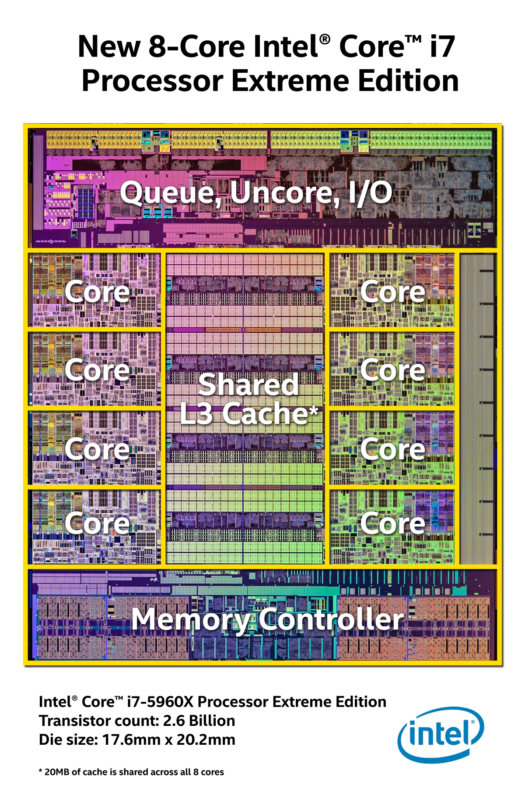
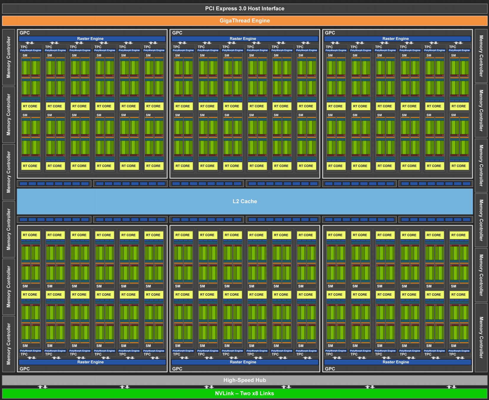
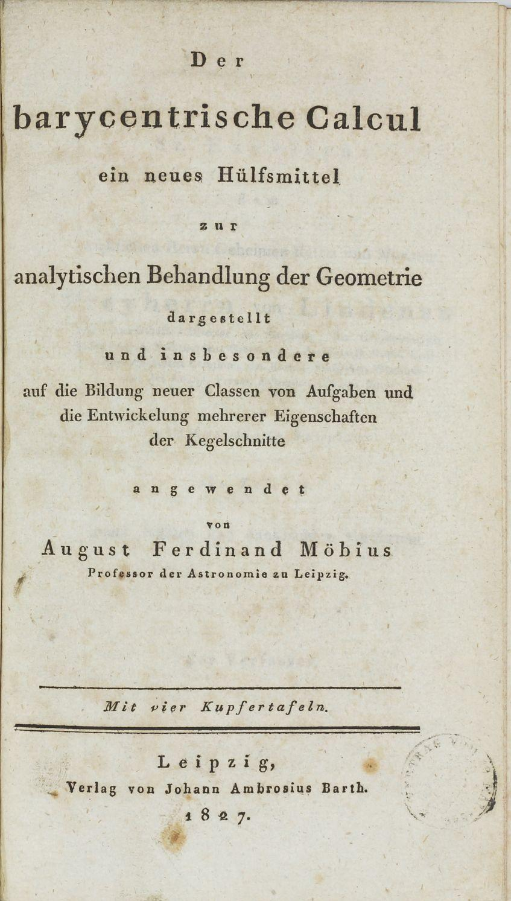
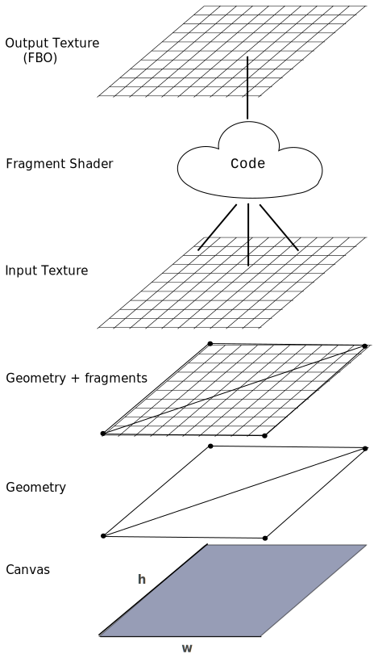

Disclaimer: WebGL is dead
However: It's the best we have right now!
Tutorials
webglfundamentals.orgkhronos.org / webgl
The Book of Shaders
Graphics Gems
OpenGL Tutorials
Vizit Solutions GPGPU
Demos
mrdoob.comshadertoy.com
threejs.org
Stack.gl Examples
acko.net
Libraries
stack.glthreejs.org
... and many others
Mind shift
Architecture
2D DataViz
GPGPU
MIND SHIFT
Your target is human eye -
Your hardware is inadequate -
CHEAT
MAGIC
/* XPM */
static char * Koules_xpm[] = {
/* width height num_colors chars_per_pixel */
"29 33 56 1",
/* colors */
" s None c None",
". c #f8f8e0",
"X c #f0f0c0",
"o c #e8e8a0",
"O c #e0e080",
"+ c #d8d860",
"@ c #d0d040",
"# c #c0c000",
"$ c #b8b800",
"% c #a8a800",
"& c #989800",
"* c #c8c820",
"= c #b0b000",
"- c #888800",
"; c #a0a000",
": c #909000",
"> c #808000",
", c #707000",
"< c #787800",
"1 c #686800",
"2 c #585800",
"3 c #505000",
"4 c #606000",
"5 c #484800",
"6 c #404000",
"7 c #303000",
"8 c #383800",
"9 c #282800",
"0 c #181800",
"q c #202000",
"w c #101000",
"e c black",
"r c #080800",
"t c #000028",
"y c #000010",
"u c #000048",
"i c #000018",
"p c #000008",
"a c #000070",
"s c #000020",
"d c #000038",
"f c #000058",
"g c #000080",
"h c #0000b0",
"j c #000050",
"k c #000098",
"l c #0000c8",
"z c #000090",
"x c #0000b8",
"c c #0000e8",
"v c #0000e0",
"b c #0000f8",
"n c #0000a8",
"m c #0000a0",
"M c #0000d8",
"N c #0000f0",
/* pixels */
" ",
" ",
" ",
" ...XooO ",
" ......XXoO+@# ",
" .......XXoO+@#$ ",
" XX.......XXoO+@#$%& ",
" ooX.......XooO+*#=%&- ",
" OoXX.....XXoO+@*#=;&- ",
" +OooXXXXXXXooO+@#$=;:>, ",
" *@+OoooXXXoooO+@*#=%&-<12 ",
" #*@+OOoooooOO+@*#$=;:-<13 ",
" $#*@++OOOOO++@*#$=%&->,45 ",
" %=$#*@@+++++@@*#$=%;:><1267 ",
" ;%=$##**@@@**##$=%;:-<12589 ",
" :;%==$#######$==%;:-<,43670 ",
" -:&;%===$$$===%;&:-<,4367qw ",
" <>-:&;;%%%%%;;&:-><,42589we ",
" 1<>--:&&&&&&&:--><1435890re ",
" 21,<<>-------><<,1236890ree ",
" t2411eeytu<<<,11eeytu90ree ",
" i653pepytua1442pepytuareee ",
" 78syyysdfgh35syyysdfghee ",
" qdtttdjakl88dtttdjaklee ",
" sfuuufazxc9qfuuufazxce ",
" gaaagkxvbwrgaaagkxvbe ",
" hnmnhlcbbeehnmnhlcbb ",
" vMvNbbbeeeevMvNbbb ",
" bbbbbeeeeeebbbbb ",
" eeeeeee ",
" ",
" ",
" "};/*
* hardcoded bitmap drawing routines
*/
static char *
draw_ball_bitmap (int radius, CONST int color)
{
char *bitmap = NULL, *point;
int x, y, r;
radius /= DIV;
if ((bitmap = alloca ((radius * 2) * (radius * 2) + 2)) == NULL)
perror ("create_ball_bitmap"), exit (-1);
point = bitmap;
for (y = 0; y < radius * 2; y++)
for (x = 0; x < radius * 2; x++, point++)
{
if ((x - radius) * (x - radius) + (y - radius) * (y - radius)
< (radius - 0.5) * (radius - 0.5))
{
r = (x - 3 * radius / 4) * (x - 3 * radius / 4) +
(y - radius / 4) * (y - radius / 4);
r = r * 32 / (1.5 * radius) / (1.5 * radius);
if (r > 31)
r = 31;
*point = color + r;
}
else
*point = 0;
}
return (CompileBitmap (radius * 2, radius * 2, (char *) bitmap));
}GPU
|  |
Turing TU102 |
Vastly different capabilities!
Architecture
Rendering Pipeline
From triangle to pixelsInitialization
var _canvas = document.createElementNS( 'http://www.w3.org/1999/xhtml', 'canvas' );
_canvas.addEventListener( 'webglcontextlost', onContextLost, false );
_canvas.addEventListener( 'webglcontextrestored', onContextRestore, false );
_gl = _canvas.getContext( 'webgl', contextAttributes ) ||
_canvas.getContext( 'experimental-webgl', contextAttributes );
if ( _gl === null ) {
if ( _canvas.getContext( 'webgl' ) !== null ) {
throw new Error( 'Error creating WebGL context with your selected attributes.' );
} else {
throw new Error( 'Error creating WebGL context.' );
}
}Vertex Buffer
squareVerticesBuffer = gl.createBuffer();
gl.bindBuffer(gl.ARRAY_BUFFER, squareVerticesBuffer);
var vertices = [
1.0, 1.0,
-1.0, 1.0,
1.0, -1.0,
-1.0, -1.0
];
gl.bufferData(gl.ARRAY_BUFFER,
new Float32Array(vertices),
gl.STATIC_DRAW);
Vertex Shader
attribute vec2 aPos; // Input
uniform mat4 uMatrix; // Constant for all invocations
varying vec4 vColor; // Output
// varying vec4 gl_Position // Predefined standard output
void main() {
gl_Position = uMatrix * vec4(aPos, 0.0, 1.0);
vColor = vec4(1.0, 1.0, 1.0, 1.0);
}Fragment Shader
varying vec4 vColor;
void main() {
gl_FragColor = vColor;
}Rasterization

Trigger drawing
// Compile shaders
shaderProgram = gl.createProgram();
gl.attachShader(shaderProgram, vertexShader);
gl.attachShader(shaderProgram, fragmentShader);
gl.linkProgram(shaderProgram);
gl.useProgram(shaderProgram);
// Set up position attribute
var posAttribute = gl.getAttribLocation(shaderProgram, "aPos");
gl.enableVertexAttribArray(posAttribute);
gl.bindBuffer(gl.ARRAY_BUFFER, squareVerticesBuffer);
gl.vertexAttribPointer(posAttribute, 2, gl.FLOAT, false, 0, 0);
// Set up transform matrix
transformMatrix = [
0.5, 0, 0, 0,
0, 0.5, 0, 0,
0, 0, 1, 0,
0, 0, 0, 1
];
var uniform = gl.getUniformLocation(shaderProgram, "uMatrix");
gl.uniformMatrix4fv(uniform, false, new Float32Array(transformMatrix));
// Draw!
gl.drawArrays(gl.TRIANGLE_STRIP, 0, 4);
Vertex Shader
attribute vec2 aPos;
uniform mat4 uMatrix;
void main() {
gl_Position = uMatrix * vec4(aPos, 0.0, 1.0);
}Fragment Shader
void main() {
gl_FragColor = vec4(1.0, 1.0, 1.0, 1.0);
}Homogeneous Coordinates
Stateful API
not object oriented
not functional
no garbage collector
objects live on a different device - opaque handles
huge amount of parameters to tweak
not functional
no garbage collector
objects live on a different device - opaque handles
huge amount of parameters to tweak
Quiche Eaters use PASCAL.functional programming.
DataViz
Map data to position / color / size / etc...Draw it, fast.
Vertex Shader
attribute vec2 aPos;
uniform mat4 uMatrix;
varying vec2 vTexCoord;
void main() {
gl_Position = uMatrix * vec4(aPos, 0.0, 1.0);
vTexCoord = aPos;
}Fragment Shader
precision mediump float;
varying vec2 vTexCoord;
void main() {
float r = length(vTexCoord);
if (r>1.0) {
discard;
}
gl_FragColor = vec4((vTexCoord.x + 1.0)/2.0, (vTexCoord.y + 1.0)/2.0, 0.0, 1.0);
}Vertex Shader
attribute vec2 aPos;
uniform mat4 uMatrix;
varying highp vec2 vTextureCoord;
void main() {
vTextureCoord = (vec2(aPos.x + 1.0, 1.0 - aPos.y)) * 0.5;
gl_Position = uMatrix * vec4(aPos, 0.0, 1.0);
}
Fragment Shader
uniform sampler2D uSampler;
varying highp vec2 vTextureCoord;
void main() {
gl_FragColor = texture2D(uSampler, vTextureCoord);
}Fragment Shader
precision mediump float;
varying vec2 vTexCoord;
void main() {
float r = length(vTexCoord);
if (r>1.0) {
discard;
}
gl_FragColor = vec4(1.0, 1.0, 1.0, 1.0 - r);
}Vertex Shader
attribute float aX;
attribute float aY;
attribute vec2 aPos;
uniform mat4 uMatrix;
uniform float uSize;
varying vec2 vTexCoord;
void main() {
gl_Position = uMatrix * vec4(aX+uSize*aPos.x, aY+uSize*aPos.y, 0.0, 1.0);
vTexCoord = aPos;
}Almost Native Graphics Layer Engine
Instanced geometry - reuse triangle mesh with different parameters.
ext = gl.getExtension("ANGLE_instanced_arrays");
ext.drawArraysInstancedANGLE(gl.TRIANGLES, 0, 6, data.x.length);Scatterplot + texture
attribute vec2 aPos; // Texture coords
attribute float aX; attribute float aY;
attribute float aWidth; attribute float aHeight;
attribute float aAngle;
attribute float aRed; attribute float aGreen; attribute float aBlue;
uniform mat4 uMatrix; // Transform matrix
uniform float uSize; // Global size scale
varying vec2 vTexCoord;
varying vec3 vColor;
void main() {
// Rotation matrix
float sa = sin(aAngle);
float ca = cos(aAngle);
mat2 rot = mat2(
ca, sa,
-sa, ca
);
// Scaling matrix
mat2 scale = mat2(
aWidth*uSize, 0,
0, aHeight*uSize
);
vec2 pos = rot * scale * aPos;
gl_Position = uMatrix * vec4(pos.x + aX, pos.y + aY, 0.0, 1.0);
vTexCoord = aPos;
vColor = vec3(aRed+1.0, aGreen+1.0, aBlue+1.0) * 0.5;
} attribute vec2 aPos; // Texture coords
attribute float aX1;
attribute float aY1;
attribute float aHeight1;
attribute float aAngle1;
attribute float aRed1;
attribute float aGreen1;
attribute float aBlue1;
attribute float aX2;
attribute float aY2;
attribute float aHeight2;
attribute float aAngle2;
attribute float aRed2;
attribute float aGreen2;
attribute float aBlue2;
uniform mat4 uMatrix; // Transform matrix
uniform float uSize; // Global size scale
uniform float uTime; // Current time
uniform float uMix; // How to mix the two sets of data
varying vec2 vTexCoord;
varying vec3 vColor;
void main() {
// Rotation matrix
float angle = mix(aAngle1, aAngle2, uMix) + uTime;
float sa = sin(angle);
float ca = cos(angle);
mat2 rot = mat2(
ca, sa,
-sa, ca
);
float width = 1.0;
float height = mix(aHeight1, aHeight2, uMix);
// Scaling matrix
mat2 scale = mat2(
width*uSize, 0,
0, height*uSize
);
vec2 pos = rot * scale * aPos;
float aX = mix(aX1, aX2, uMix);
float aY = mix(aY1, aY2, uMix);
gl_Position = uMatrix * vec4(pos.x + aX, pos.y + aY, 0.0, 1.0);
// vTexCoord = vec2((aPos.x+1.0)/2.0, (1.0-aPos.y)/2.0);
vTexCoord = aPos;
vColor = vec3(
mix(aRed1, aRed2, uMix)+1.0,
mix(aGreen1, aGreen2, uMix)+1.0,
mix(aBlue1, aBlue2, uMix)+1.0) * 0.5;
}GPGPU

uniform sampler2D uSampler;
varying vec2 vTextureCoord;
void main() {
float d = 1.0 / 512.0;
gl_FragColor = (
texture2D(uSampler, vTextureCoord) * 4.0 +
texture2D(uSampler, vTextureCoord + vec2( d , 0.0)) +
texture2D(uSampler, vTextureCoord + vec2( 0.0 , d )) +
texture2D(uSampler, vTextureCoord + vec2( -d , 0.0)) +
texture2D(uSampler, vTextureCoord + vec2( 0.0 , -d ))
) / 8.0;
}Same, now with more float.
// This is available for newer WebGL only
gl = canvas.getContext("webgl2");
// Make sure we can do linear interpolation on floating-point textures
gl.getExtension('OES_texture_float_linear');
// Enable floating point framebuffers
gl.getExtension('EXT_color_buffer_float');calculate 1D gaussian smoothing on GPU
plot as points